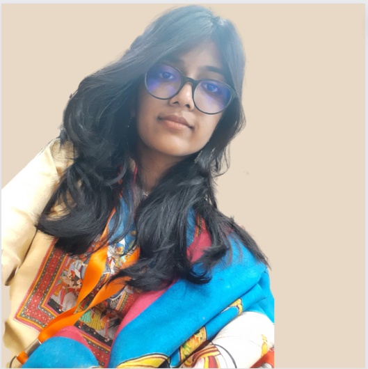

Ananya Bansal

Summary
I am a motivated individual with a determination to harness technology to solve the problems of the
society. I strongly believe that collaboration and collective learning brings the same results faster and
more efficiently.
Education
- INDIRA GANDHI DELHI TECHNICAL UNIVERSITY FOR WOMEN (EXPECTED 2025)
Bachelor of Technology – Computer Science and Engineering;
CGPA- 8.508
- CAMBRIDGE SCHOOL, SRINIVASPURI
AISCCE : 95.8%
Work Experience
UI-UX TEAM
CELESTIAL BISCUIT- IGDTUW (MAY 2022- NOV 2022)
- Developed design templates for the Hall of Fame project website using Canva.
- Learnt about GitHub, HTML and CSS
HEAD COORDINATOR
INNERVE- ANNUAL TECHNICAL FEST IGDTUW (AUG 2022- OCT
2022)
- Reached out to several potential sponsors through cold emails
and calls to convince them to sponsor the fest.
DELEGATE
HARVARD PROJECT FOR ASIAN AND INTERNATIONAL
RELATIONS (AUG 2022- SEPT 2022)
- Selected as a delegate for HPAIR ACONF 2022 in New Delhi
through a rigorous screening and interview for further
evaluation.
SOCIAL MEDIA AND DESIGN HEAD
TEDX CAMBRIDGE SCHOOL SRINIVASPURI (AUG 2022- SEPT
2022)
- Edited, uploaded and managed posts on the official
Instagram page of TEDx Cambridge School Srinivaspuri.
Skills
Languages
- C++(currently learning)
- Python
- SQL
- HTML
Tools and Technologies
Soft Skills
- Leadership
- Time Management
- Public Speaking
- Team Work
Projects
MindRight
Built a website to help improve people’s mental health as part of
velobywix track of hackathon hack the mountains 3.o.
LIBRARY MANAGEMENT SYSTEM
Created a library management system using Python file
handling. The access toits details was encrypted with a
password.
Other
My Hobbies
Contact Me